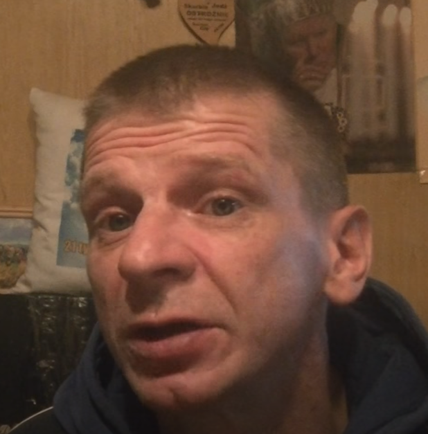

MAJOR SUCHODOLSKI
(Kanał Youtube -Major Suchodolski z Bombasu)
Major Suchodolski, właśc. Wojciech Paweł Suchodolski urodzony 27 sierpnia 1974 w Białymstoku – białostocki przedsiębiorca na emigracji, youtuber, videobloger i osobowość internetowa, były współlokator i konkubent Krzysztofa Kononowicza, wiceprzewodniczący Biura Interwencji Obywatelskich, astronom, antykomunista, artysta performatywny, ambasador marki Anser i regionu Suchodolszczyzny.
Obok Krzysztofa Kononowicza główna postać Uniwersum w latach 2015-2022, obecnie 3 najważniejsza postać uniwersum. Specjalizuje się w robieniu lajtów oraz nagrywaniu tzw. psznego jedzenia, podczas których propaguje spożywanie pokarmów bez użycia zębów. W latach 2015–2022 zamieszkiwał Belweder, do którego przygarnął go Konon, pomagając mu wyjść z bezdomności. Od 7 marca 2022 roku mieszka w Niemczech. Koneser rozpuszczalnika Nitro, olkoholu, bigosu z myndyrynkami, zupy porówkowej oraz kababa w kapuśniaku. Alfabeta, erosoman, weteran wojny w Bombasie, rokongrelowiec, były przyjaciel Nera. Zdarza mu się mieć lepszą wiadomość albo problemy gastryczne po wypiciu kwaśnego mleka albo zjedzeniu twarożku. Posługuje się językiem bombaskim. W maju 2019 roku założył działalność gospodarczą, przez co posiada NIP i podatki płaci, ugółem.
Od 1 kwietnia 2015 roku do 7 marca 2022 roku premier Bombaskiej Republiki Ludowej. Od 7 marca 2022 roku ambasador Bombasu w Niemczech.
